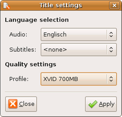

Lemonrip
Archivierte Anleitung
Dieser Artikel wurde archiviert, da er - oder Teile daraus - nur noch unter einer älteren Ubuntu-Version nutzbar ist. Diese Anleitung wird vom Wiki-Team weder auf Richtigkeit überprüft noch anderweitig gepflegt. Zusätzlich wurde der Artikel für weitere Änderungen gesperrt.
Zum Verständnis dieses Artikels sind folgende Seiten hilfreich:
Lemonrip  ist ein Programm zum Betrachten, Rippen und Umwandeln von DVDs. Die Perl::GTK-Anwendung nutzt hierzu die Programme MPlayer und MEncoder. Das Programm erstellt Dateien im Video-Containerformat MPEG-4 (.avi). Als Codecs werden Xvid und X264 unterstützt. Diese stehen in unterschiedlichen Qualitätsstufen zur Verfügung. Automatisches Zuschneiden und Skalieren mit Vorschau sind ebenso möglich wie die Wahl der Audiospur. Auf Wunsch kann der Computer nach dem Umwandeln automatisch heruntergefahren werden.
ist ein Programm zum Betrachten, Rippen und Umwandeln von DVDs. Die Perl::GTK-Anwendung nutzt hierzu die Programme MPlayer und MEncoder. Das Programm erstellt Dateien im Video-Containerformat MPEG-4 (.avi). Als Codecs werden Xvid und X264 unterstützt. Diese stehen in unterschiedlichen Qualitätsstufen zur Verfügung. Automatisches Zuschneiden und Skalieren mit Vorschau sind ebenso möglich wie die Wahl der Audiospur. Auf Wunsch kann der Computer nach dem Umwandeln automatisch heruntergefahren werden.
Installation¶
Zur Installation des Programms muss das Paket lemonrip_1.20_all.deb von
linux.softpedia.com heruntergeladen und installiert [1] werden.
Hinweis!
Fremdpakete können das System gefährden.
Nach der Installation ist es unter Lucid mit Gnome unter "Anwendungen -> Unterhaltungsmedien -> Lemon Rip" zu finden, oder kann mit lemonrip gestartet werden [2]
Bedienung¶
Die Oberfläche des Programms präsentiert sich schlicht. Um einen Film zu rippen die entsprechende Datei anwählen. Ein  Doppelklick auf den Titel ermöglicht es, der Datei einen eigenen Speichernamen zu geben. Mit "Settings" wählt man die gewünschte Sprache, den Untertitel sowie die Qualitätsstufe aus. Nachdem man mit "Apply" die Auswahl bestätigt hat und mit die gewünschten Einstellungen vorgenommen hat, startet man mit "Convert" die Umwandlung.
Doppelklick auf den Titel ermöglicht es, der Datei einen eigenen Speichernamen zu geben. Mit "Settings" wählt man die gewünschte Sprache, den Untertitel sowie die Qualitätsstufe aus. Nachdem man mit "Apply" die Auswahl bestätigt hat und mit die gewünschten Einstellungen vorgenommen hat, startet man mit "Convert" die Umwandlung.
| Funktionen | |
| Symbol | Beschreibung |
| Wiedergabe der DVD. | |
| Rippen starten. | |
| Einstellungen (Ausgabeformat, Speicherpfad und Qualität). | |
| Wahl der Audiospur und des Speicherformats. | |
| Programmfenster |
|  |
| Optionen |
| Einstellungen |
Konfiguration¶
Über "Edit -> Preference" oder erreicht man die Programmeinstellungen. Neben dem Laufwerk, dem Speicherpfad und dem Videoformat können hier die Qualitätseinstellungen verändert werden. Cropping hilft bei der Formatierung in das gewünschte Format.
Sofern gewünscht kann die DVD nach dem Rippen automatisch ausgeworfen oder das System heruntergefahren werden.
- Erstellt mit Inyoka
-
 2004 – 2017 ubuntuusers.de • Einige Rechte vorbehalten
2004 – 2017 ubuntuusers.de • Einige Rechte vorbehalten
Lizenz • Kontakt • Datenschutz • Impressum • Serverstatus -
Serverhousing gespendet von